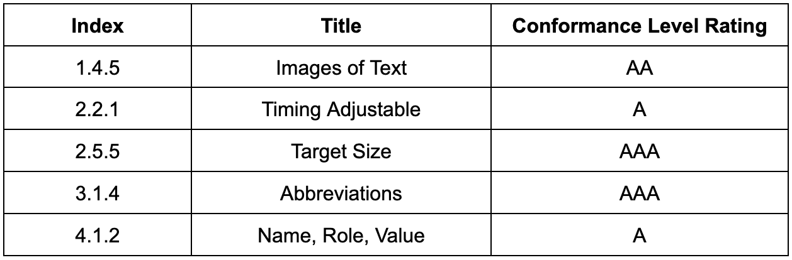

Learning Objectives
- Understand how heaps are implemented.
- Understand how to use multiple data structures simultaneously.
- Understand what the WCAG guidelines are and how to implement them.
Background SlideShow
Learn some background using our slideshow


See additional ressources
Assignment
1. Overview
In this assignment, you will create a program that uses the heap data structure to run queries on a file containing the success criteria of the Web Content Accessibility Guidelines (WCAG) 2.1. These guidelines proved recommendations for making web content accessible to people with disabilities, such as blindness, deafness, limited movement, speech disabilities, photosensitivity, and learning disabilities. The success criteria have three levels of conformance — A, AA, and AAA — with level A being the minimum level.
For more information, you can refer to the official WCAG 2.1 guidelines on the Web Content Accessibility Guidelines (WCAG) 2.1 website.
As WCAG 2.1 has a long list of requirements (success criteria) that are referenced by numbers, you program will provide an efficient way to navigate this list. The program consists of three phases, and it will allow you to easily query the WCAG success criteria by referencing their respective numbers. By the end of this assignment, you will have a useful tool for anyone looking to ensure their website meets accessibility standards and is accessible to everyone, regardless of their disabilities.
2. Phases
Below is a list of phases that will help guide you to the completion of this assignment. There is a small introduction and several TODOs that need to be successfully implemented to get a working project.
Phase 1
This phase involves completing the implementation of a min-heap in the Heap.java file that has been provided in the skeleton repository.
TODOs
- Read and understand the class invariant specified in the comment at the top of the class. This will help you understand the properties that the Heap must satisfy. Remember, all public methods are responsible for ensuring that the class invariants are true before the method returns.
- Implement the add method by using the bubbleUp helper method, which will be used in both bubbling routines.
- Implement the swap helper method, which will be used in both bubbling routines.
- Implement the peek method, which should return the minimum element without modifying the heap.
- Implement the poll using bubbleDown, which you will implement next.
- Implement the bubbleDown method. It is highly recommended to use on or more helper methods to keep the code clean. A suggested private method, smallerChild, has already been included. Along with its specification, that was used in our solution.
Phase 2
This phase involves completing HeapTester.java by utilizing your code from the previous phases. You will use a min-heap to organize the data contained in AccessibilityGuidelines.txt, which is a collection of data points based on the WCAG.
Each guideline within AccessibilityGuidelines.txt comprises an index, a title, and a conformance level rating. The data point grouping is indicated by a 3-decimal number called the index. For instance, the first guideline is 1.1.1, followed by 1.1.2, and so on. The title provides a description of the contents. The conformance level, indicated by A, AA, or AAA, specifies the extent to which meeting the guideline would enhance a website's accessibility. Level A indicates the minimum level of accessibility, while level AAA indicates the highest level of excellence.
(Figure 1) A sample of the data contained in AccessibilityGuidelines.txt.
The code to obtain these data points is already given in the getAccessibilityGuidelines function. It will return a 2D array and your task is to take the given data and apply it to your heap.
TODOs
- Read and understand what getAccessibilityGuidelines does and returns.
- Uncomment the getAccessibilityGuidelines function call in main in HeapTester.java. This will read the data from AccessibilityGuidelines.txt.
- Specify the file path of AccessibilityGuidelines.txt as an argument for the getAccessibilityGuidelines function. You can find the path by right clicking on the text file in the file explorer and copying it into your code. Alternatively, if the text file is in the same folder as your terminal, you can use its name directly.
- Use the 2D string array returned by getAccessibilityGuidelines to create a heap.
- Initialize a heap data structure to store the string array.
- Create a loop in the main function to iterate through the 2D array.
Phase 3
This phase will utilize your heap to quickly access WCAG data.
TODOs
- Check the invariants 3 - 5 and make sure they are completed. You will be updated methods: add,
swap, and poll.
- Invariant 3: The tree cannot contain duplicate values; note that duplicate priorities are still allowed.
- Invariant 4: Map contains one entry for each element of the heap, so map.size() == c.size(). (Done in contains).
- Invariant 5: For each value v in the heap, its map entry contains the index of v in c. Thus: map.get(b[i]) = i.
- Implement changeAccessibilityPriority to change the priority of each node in the heap.
- Use your data structure to efficiently find the answers to the following questions. To do this, you will
need to access your arraylist through your heap. Write out the answers to the following
questions:
- Does your heap contain a data point with the value "Consistent Navigation A"?
- What is the lowest priority entry in your heap? The highest?
- What data point is stored in the 15th position in your arraylist?
- What is the WCAG index value associated with the value "Focus Order A" (e.g., 1.1.1)?
3. Project Plan and Reflection
Each person must write both a project plan named plan.txt and a reflection named reflection.txt. plan.txt must be completed before the start of the project and reflection.txt must be completed before submitting your project.
plan.txt should include the following information:
- A one paragraph summary of the program in your own words. What is being asked of you? What will you implement in this assignment?
- In 2-3 sentence, explain your thoughts on what you anticipate being the most challenging aspect(s) of the assignment.
- A proposed schedule for when you will work on this assignment with your partner and where you will meet.
- A list of at least 3 different resources you plan to use if you get stuck on something.
- Declare/discuss any aspects of your code that are not working. What are your intuitions about why they are not working? Acknowledge and discuss any parts of the program that appear to be inefficient.
- What are some of the most important lessons you learned while working on this assignment? Why do you think so?
- What was the most challenging aspect of this assignment? Why?
4. Instructions
- Implement the phases
- Test your code with the AccessibilityHeapTest.java file.
- Push the final project, plan.txt, and reflection.txt to github.